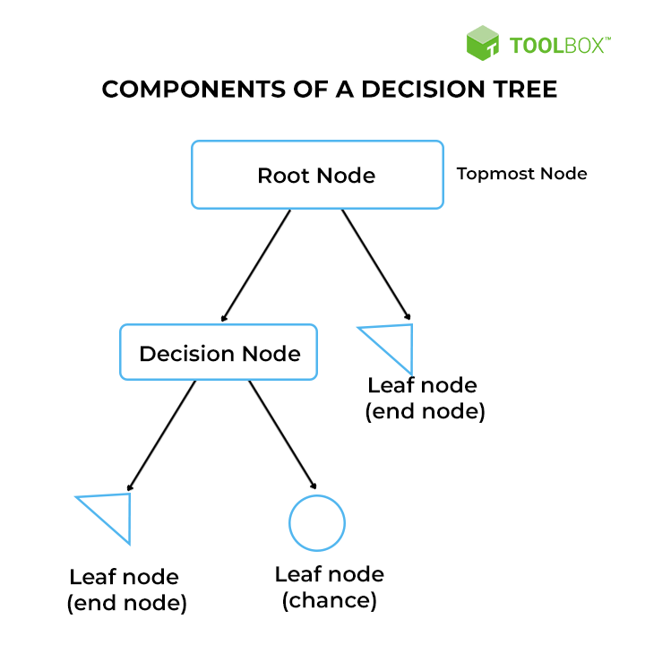
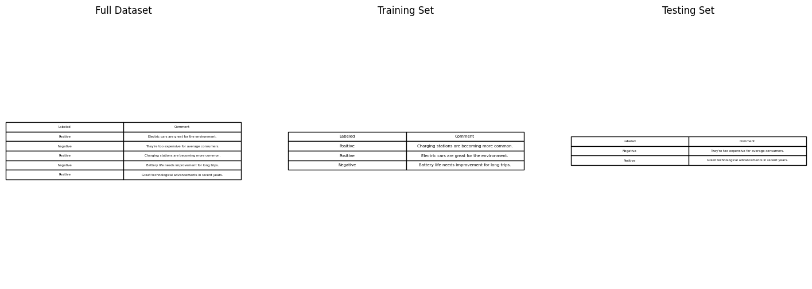
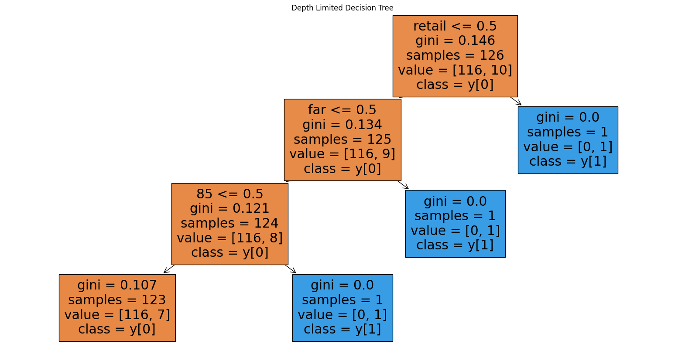
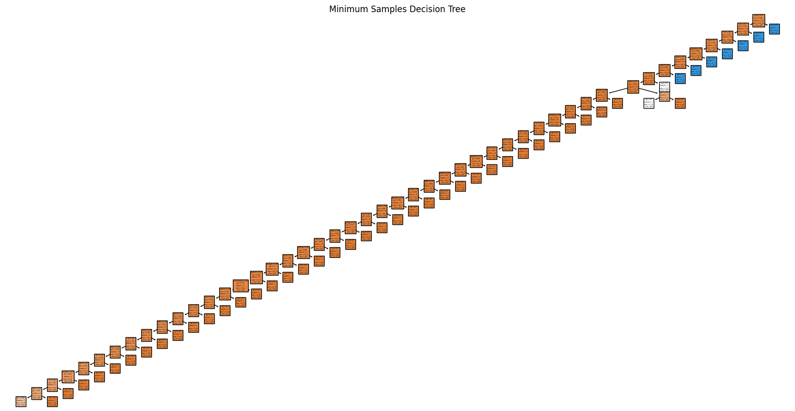
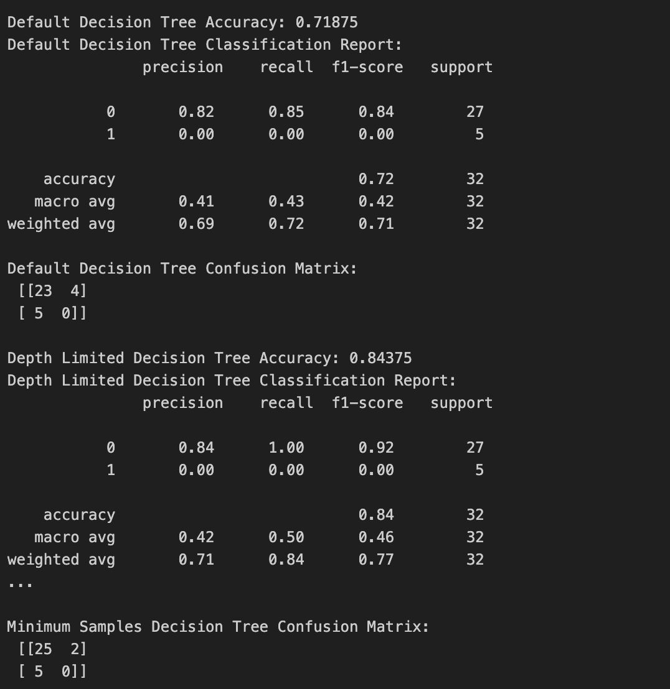

Overview
Decision Trees (DTs) are a non-parametric supervised learning method used for classification and regression tasks. The goal is to create a model that predicts the value of a target variable by learning simple decision rules inferred from the data features.
How Decision Trees Work:
- Tree Structure: A decision tree is constructed starting from the root node and branching out into decision nodes and leaf nodes. Each decision node represents a feature in the dataset, and each branch represents a decision rule, leading to a leaf node.
- Leaf Nodes: The leaf nodes of the tree represent the outcomes or target values.
- Splitting Criteria: The features are chosen for splitting at each node based on certain criteria such as Gini impurity, entropy (information gain), or variance reduction for regression.
- Recursive Binary Splitting: Decision trees usually split the nodes into two child nodes, hence why the process is known as binary splitting.
- Pruning: To avoid overfitting, trees can be pruned by removing branches that have little power in predicting the target variable.
Applications of Decision Trees:
- Classification: Decision trees can be used to classify instances into different categories. For example, they can be used in email filtering to classify emails into "spam" or "not spam."
- Regression: DTs can predict continuous variables, such as the price of houses based on features like location, number of rooms, and size.
- Feature Importance: They inherently perform feature selection, indicating the most important features for making the prediction.
- Business Decisions: DTs can model complex strategic decisions and evaluate possible consequences, useful in business analytics.
Example Uses in Classification or Prediction:
- In healthcare, a decision tree might classify patient outcomes based on symptoms and test results to inform treatment plans.
- In finance, they could predict whether an individual will default on a loan based on their financial history.
Informing the Topic: For your topic, a decision tree could classify or predict outcomes based on relevant data. For example, if your topic involves customer satisfaction, a DT could predict satisfaction levels based on service usage patterns.
Expectations: You would expect the decision tree to provide insights into which factors are most predictive of the outcome you're interested in. The interpretability of DTs is beneficial since the decision process is transparent and can be easily understood and visualized.

Data Preparation
Supervised learning is a type of machine learning where an algorithm is trained on labeled data, which means the data is already associated with the correct answer. In other words, each training example is a pair consisting of an input object (typically a vector of attribute values) and the desired output value (also known as the supervisory signal).
Here's a step-by-step explanation:
- Labeled Data: This is the foundation of supervised learning. It consists of a dataset with examples that have both 'features' (input data points) and a corresponding 'label' (the correct output). For instance, in a dataset for email classification, the features might be the words in the email, and the label would be "spam" or "not spam."
- Training Set: This is the portion of the dataset used to train the model. It is a subset of the labeled data, and the algorithm uses it to learn the relationship between the features and the label.
- Testing Set: This is another subset of the labeled data, but it is kept separate from the training set. The testing set is used to evaluate the model's performance, to see how well it has learned to generalize from the training set to new, unseen data.
Why the Training and Testing Sets Must Be Disjoint:
The reason for keeping the training and testing sets disjoint (i.e., having no overlapping examples) is to prevent the model from simply memorizing the data (overfitting) and to ensure that its performance metrics reflect its ability to generalize to new data. If the model were tested on the same data it was trained on, you wouldn't be able to tell if it's just recalling the answers or actually learning the underlying patterns.
Visualizing the Data:
In practice, we don't usually visualize the entire training and testing datasets, especially if they're large. Instead, we might show the first few rows of each to get a sense of the data. Visualizations like small tables showing the first few rows of the full dataset, training set, and testing set can be helpful. Each table would have columns representing the features and one column representing the label.
Explain this and show an image of the sample of data you plan to use..

Results
The Decision Tree (DT) visualizations and the accompanying performance metrics illustrate three different models. Let's discuss each one:
Interpretation of Results:
- Precision and Recall: The models are displaying high precision for the negative class (class 0), but the recall for the positive class (class 1) is zero. This indicates a significant imbalance, where the model is conservative and biased towards the negative class.
- F1-Score: F1-Scores combine precision and recall into a single metric, which is particularly useful when dealing with imbalanced classes. The F1-Score for the positive class across all models is 0, reflecting that the model is not capturing the positive class at all.
- Overfitting and Underfitting: The default decision tree appears to be complex and potentially overfitted, as suggested by its extensive structure. However, despite its complexity, it still fails to identify positive instances. The depth-limited tree and the minimum samples tree might be underfitted since they are too simple to capture the complexity of the data, evidenced by their performance not improving over the default tree.
Model Implications:
- Model Bias: The bias towards the majority class suggests the model might be overly simplified and unable to capture the nuances needed to distinguish the minority class.
- Class Imbalance Solutions: Implementing resampling strategies or using more sophisticated algorithms designed to handle class imbalance could be beneficial. Ensemble methods like Random Forests or Gradient Boosting might provide a better balance between precision and recall.
- Hyperparameter Tuning: A grid search or random search for hyperparameter tuning could help in finding a better configuration for the Decision Tree that balances out the performance on both classes.
Visualization and Interpretability:
- Decision Trees as Explanatory Tools: Decision Trees can serve as powerful tools for explanatory analysis. They provide clear visualization of the decision-making logic that can be communicated to stakeholders, especially in fields like medicine or finance where interpretability is crucial.
- Feature Importance: The models can be further analyzed to determine feature importance, which highlights which features are most influential in making predictions. This is valuable for understanding the driving factors behind the outcomes and could lead to actionable insights.
Anticipated Improvements:
- Better Handling of Minority Class: By addressing the class imbalance, there should be an anticipated improvement in the recall for the minority class without severely compromising the precision for the majority class.
- Model Complexity: Adjusting the complexity of the model to the right level by pruning (to reduce overfitting) or expanding the tree depth (to reduce underfitting) should improve model performance.
- Performance Metrics: Moving away from accuracy as the primary metric, alternative measures like the Area Under the Receiver Operating Characteristic Curve (AUROC) or the Area Under the Precision-Recall Curve (AUPRC) could be more informative in the context of imbalanced datasets.
Conclusion: The current Decision Tree models' inability to identify positive cases is indicative of the need for a strategic approach to model selection and training. There is a need to balance the model's ability to predict both classes effectively, taking into consideration the different costs associated with false positives and false negatives. In conclusion, a more nuanced approach, potentially incorporating ensemble methods and a focus on class balance, may yield more effective and actionable results.



Conclusions
From the performance of the Decision Tree models and the analysis of the results, here are the conclusions and learning points relevant to your topic:
- Class Imbalance Challenge: The models consistently show a strong bias toward predicting the majority class, revealing a significant class imbalance in the dataset. This is a common issue in datasets where one class is much more frequent than the other, leading to models that perform well on the majority class but poorly on the minority class.
- Model Performance and Suitability: The high accuracy on the majority class does not translate to overall effectiveness of the model. Despite the Decision Trees' interpretability, they do not currently serve the needs of the topic if the goal is to accurately predict or classify both classes.
- Need for Focused Metrics: Precision, recall, and F1-scores are more insightful than accuracy in imbalanced datasets. The consistently low F1-score for the minority class indicates that the model’s ability to provide valuable predictions for that class is inadequate.
- Predictions for the Topic: Based on the current models, predictions for the minority class would be unreliable. For a topic where identifying all classes accurately is important, the model would require substantial improvement.
- Insights into Features: Decision Trees can offer insights into which features are most significant in predicting the outcome. Although not explicitly discussed here, feature importance analysis could reveal which aspects of the data the model is focusing on, which can inform further data collection or feature engineering efforts.
- Informed Strategies for Improvement: To better address the topic, strategies like adjusting class weights, resampling the dataset, or trying different algorithms might be necessary. Exploring these options could lead to a model that is more balanced and better suited for practical application.
- Interpretability and Explainability: Even though the model did not perform as well as needed for the minority class, Decision Trees provide a clear and interpretable structure that can explain decisions. This is beneficial for topics requiring explainable AI.
- Anticipating Model Behavior: Given the learning from these models, any future models trained on this dataset can be anticipated to need specific attention to the class imbalance issue. Model selection and evaluation should be done with a focus on measures that are informative in the presence of class imbalance.